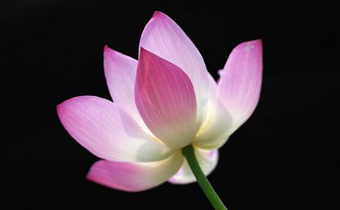

法王如意宝曾开示:“不管是大上师还是小上师,无论他的名声是否广大,只要自己在他面前得到过殊胜的密法,这就是自己的根本上师,对他我们应该感恩不尽。”、“无论我们修任何一个法,首先要对上师祈祷,然后再继续修持,这是我们宁玛巴普遍的传统。因此千万不能忘记自己的上师,若能经常这样行持,那将来的将来也就会越来越吉祥和圆满。”
“希望大家对三宝应该生起信心,特别是对自己的根本上师要作猛厉祈祷:祈祷上师您心中的智慧完全溶入我的心间,愿我将来能弘法利生,请好好地加持我的相续。这样,哪怕是一刹那祈祷自己的传承根本上师,上师的大悲加持也会对我们有很大的意义。”,“若传承上师、本尊和护法神生起欢喜,那自己所作的弘法利生事业会圆满成功,否则,一切事情都不会吉祥顺利。有时,我们看见某些人在修道过程中违缘重重,其原因就是持明圣者没有生起欢喜心。若是想方设法让持明上师生起欢喜心,那自己的功德就会逐渐圆满,这种人今生和来世都是在幸福安乐中度过,其弘法利生事业非常广大,连自己也感到稀有。”
1、为什么要与上师共修?
法王每见末法众生根基下劣、罪业深重,非造极大善业则罪业难净;懈怠不已、勤苦难为,非简单易行之方便则难能为之。故多次开示此类简单易行之善巧方便,大悲救拔末世罪苦众生。包括普劝共同念诵普贤行愿、摄受自在祈祷文、极乐捷径、金刚萨埵心咒、放生一亿等等。
如果一个人每天坚持放一万个生命,需要三十年才能放够一个亿,如果有一万同修依照共修回向发愿一起共修,只要每人每年至少放一万小生命,则每年每个同修都相同于放了一亿个众生。如果您愿意节省大量的时间、精力和金钱,用以从事这种对于佛法和自身极具意义的工作的话.请不论采取团体和个人放生哪一种形式,终身依止共修回向而回向放生,即共修放生。以此共修功德:① 可以达到一个人无法企及的功德胜利。② 为每个人最大程度地节省了人、财、物力和时间,因此这是顺应众生能力的最好办法。③ 顺应了上师佛陀的心愿。诚如《大方广佛华严经》中所言:“众生至爱者身命,诸佛至爱者众生,能救众生身命,则能成就诸佛心愿。”
堪布慈诚罗珠开示:“与法王等高僧大德们共修可当下证悟、或几年后证悟,都是不一定的,还要看自己当前的修行状况。但可以肯定的是,与法王等高僧大德们共修,由于他们具有不共的殊胜发心,使你获得修持上殊胜的缘起加持,故具有极殊胜的意义。平时我们应尽量跟随法王等高僧大德们共修,他们倡议放生,我们就尽量跟随参加;他们劝众共修念诵,我们也应尽量去念,随力所做一切都要以菩提心来摄持。”
“我们现在已经放了将近两个亿的生命,参加放生的每一个人都能得到这份功德。这种善法本身就不可思议,如果再加上如理如法地发心和回向,功德就更不可思议,一定能够清净我们所有的罪业。”
2、为什么上师特别抉择放生?
大持明者晋美彭措法王曾开示大众及一切弟子:“在末法时代,放生是诸善事中能让诸佛菩萨、根本上师生起欢喜的唯一的因。”这也就是阿秋法王恩赐放生教授之根本目的。对于发愿终生共修如是放生事业的徒众,(阿秋)法王仁波切曾数次授记其将任意往生极乐刹土或莲师刹土。
“一切有漏善法中,无有能比放生之功德大。凡其它善业,若自心不净,就无有功德,但放生时,无论其心净或不净,其事皆是直接对众生有利,因此有不可思议的善果,哪怕是放一条生命的功德也无法衡量。”“戒杀放生是大乘菩萨本份中的事,也是圆满成佛资粮的最大方便。”
索达吉堪布、堪布慈诚罗珠、堪布益西彭措、索达吉堪布呼吁放生中说:一般说来,除了证悟空性之胜义善法以外,若以世俗谛的标准判断,则一切有为善法,诸如诵经、持咒、供养、礼拜等等,其功德均无法超胜放生之功德;而所有恶业中则以杀生为最可怕、最严重。
藏地著名空行母根桑曲珍游行中阴教言《深道总集空行耳传深义莲花心滴》云:“一切高贵卑贱众,今生来世安乐法,无此放生更殊胜,转绕瞻洲之功德,等同放生一牛犊,念诵七亿观音咒,等同放生一小牛,吾至阎罗境见此,今莫忘失空行语,厉力放生牛犊等,乃有无量功德也。” ——若每天5万需5小时,至少40年才完成7亿。
龙树菩萨在《大智度论》中就这样讲过:“诸余罪中,杀业最重。诸功德中,放生第一。”
近代禅门高僧虚云老和尚 :“我们要勇猛精进,要内外加修。内修,即是单单的参一句‘念佛是谁’的话头,或念一句‘阿弥陀佛’,不起贪嗔痴恚种种其他念头,使真如法性得以透露。外修,即是戒杀放生,将十恶转为十善,不要一天到晚酒肉薰天,造无边的罪业。” 佛印禅师:“戒杀念佛兼放生 决到西方上品会.”
净土宗大德蕅益大师开示:“杀生即杀自心未来诸佛,放生即放自心未来诸佛;若放自心未来诸佛,即真念佛三昧;修此念佛三昧,是恒转法华经百千万亿部也。” “欲即人心证佛心,转劫浊成净土,术莫于放生,放生一法,唯广与久,一杯水不救车薪火,唯设人各一杯焉,一杯不已再一杯已,杯水多,车火未有不灭者,今杀运纷纷,并同分恶业招感,非慈悲三昧水,熟能熄之。” 憨山大师:“放生又念佛,万修万人证。” ——中间特示“ 唯广与久”等共修要义也!
3、为什么要终生、不间断地、尽力去做?
法王说:“从我当年在石渠求学的情况来看,当时在至尊上师托嘎如意宝的身旁,确实有如天上繁星那么多的智者和守持净戒的人,如今有不少人已经堕落到了极为卑劣的地步。反而当时有些戒律不是很清净、智慧比较浅薄的人,现在却成了非常了不起的高僧大德。回顾这些历史可以看出,即使自己的相续中产生了暂时的智慧和清净的戒律等功德,这些也并不是恒常不变的。”,“如果没有长期坚持精进修持,那无始以来的习气不但难以改掉,而且前面得到的少许智慧也难以巩固,非常容易消失。所以我们对善法和闻思修应当尽心尽力地去行持。如果自己没有痛下苦功,就无法获得功德,所以一刹那也不要散乱,就这样年复一年、日复一日精进地修持,一定要不间断地修持!”
4、为什么能够亲自去放生更好?
有的居士讲:“我只是给共修放生捐了款,本人并没有亲自参与放生活动,不知这样是否能获得共修放生的功德?”
堪布慈诚罗珠回答:“只捐款虽然可以获得同样的功德,但还是与自己亲自参加有一定的差别。如阿底峡尊者曾示现亲自动手做“察察”佛像,而且开示弟子身语意三门圆满之善业具极大利益。虽三门中依“意业”为主而区分善恶业,但对凡夫而言,通过身语善业的勤做,会对无常心、出离心、菩提心等意业,有增上熏习之利益,故不可轻易忽视。”
5、为什么要具足“三殊胜”去修持?
堪布慈诚罗珠开示如下:
“作为佛教徒,我们经常放生。如果如法地放生,功德是不可思议的;如果不够如理如法,功德就不是很大。所以,这对我们来说非常重要。”,
“虽然三殊胜的修法,是最基础的入门修法,但可能对于许多人来说,却是前所未闻的。这个修法说起来容易,做到却很困难,恐怕有些学佛很久的人也未能做到。”,
“无垢光尊者讲过:所有的善业,无论大小,都不能离开这三个框架,都要夹于此三殊胜中间。如果不离开三殊胜,则所做的一切善业皆为解脱道;如果离开这三种殊胜,即使表面上再伟大、再深广,也不是解脱道。所以,这三个殊胜非常重要。”,
“如理如法的放生,可具足三种殊胜、菩萨六度,并获得佛身语意三金刚的加持和迅速圆满二资粮的一切功德。”
第一、动机殊胜。在每次做善事之前,肯定会有目的,没有任何目的的行善、修法是很少的。如果在行善时,具备殊胜的动机,就能起到事半功倍之效。
(1)是下士道:这种动机是三种善的动机中层次最低的。具有这种动机的人不是考虑解脱,而仅仅是为了下一世不堕地狱、饿鬼、旁生道,希望得到人、天的果报,为了来世能得到健康、长寿,获得有地位、有财产、有名誉的人身而去行善。这虽然是善,但仍与解脱没有关系,所以是最低层的。
(2)是中士道:即小乘声闻、缘觉的动机。也即不是为了追求世间圆满,不是考虑健康、长寿等目的而修行。因为这种发心的人,对世间圆满以及自身五蕴(肉身等)怀有恐慌厌离之心,极其渴望能早日摆脱五蕴的束缚。所以,他的行善修法不是为了追求世间圆满。这种动机是中等的。以这种修法除了能使自己获得解脱之外,没有其它的果报。
(3)是上士道:也就是大乘菩萨的发心,这是善的动机中难度最大的。以我的一己之见来看,能走上上士道的人很少很少。大乘菩萨真正的菩提心,是指毫无自私地奉献、毫无条件地付出。尤其在遇到困难、艰辛之时,能保持这种精神是极难的。平时我们在顺意安适之时,于修法打坐之中,偶尔生起“我为度化一切众生而发誓成佛,为了获得佛的果位,所以打坐、修行”的念头也许不是很难,但这种菩提心是不稳定的。只有反反复复地修炼,才会生起真实、稳固的菩提心。开示不是论典,一看就能够领会,在领会之后若肯实修,就能够生起无伪的菩提心。发菩提心的第一个条件,是发愿度众生;第二个条件,是要有为度化众生而发誓成佛的决心。一旦生起慈悲心,离菩提心也就是咫尺之遥了。
第二、无缘殊胜。所谓无缘,就是空性之义。如果能达到这种境界,则无论作任何善事，比如打坐或者放生，都能成为非常殊胜的善行。佛经对无缘殊胜的要求是：在不离空性境界的同时，去行持布施、持戒等六度。例如，放生的时候，应了知放生者（自己）、所放生命、放生行为都是无有自性、如梦如幻的，亦即做到三轮清净（或称三轮体空），这就是无缘殊胜。 佛经中讲，在行善时，虽然不能做到“无缘”，但也要认认真真、一心一意地去做。所谓的“一心一意”，是指在行善时，不但身体要认真去做，内心也要如理如法地发心、回向，认真谨慎地观想、作意，这可以算是“无缘”的最低限度。 在没有证悟之前的“无缘殊胜”，就是在出离心和菩提心的基础上，认认真真、心不散乱、如理如法地去行持。
第三、回向殊胜。行善修法结束后，还应当如理如法地回向。在打坐、放生时，就已经成就了很好的善业，将此善业用于何处，是很关键的问题。是用于解脱？还是用于健康长寿？或是用于下一世的人天果报？这是自己可以选择的，这种目的性的选择，就叫回向。如果我们不及时如法地回向，在以上这些情况下（发嗔恨心、自诩功德、于善生悔、颠倒回向），即使再多、再殊胜的善根，都会被毁于一旦。在这些毁坏善业的因素当中，最容易出现的是嗔恨心，它能毁坏无以计数的善业，对凡夫人而言，是非常可怕的。所以，行善之后必须立刻回向。回向应当与发心相应。我们的发心如果是为一切众生而行善，最后也要为一切众生而回向。所谓“真实的无毒回向”，是指登地以上的菩萨在无缘禅定中的回向，这是薄地凡夫所无法做到的。我们现在只能做相似的无毒回向，这种回向不是指以中观的逻辑来抉择一切法是空性。我们应一心一意地想：过去的佛、现在的佛、未来的佛如何回向他们的善业，我也如此回向我的善业，这样真心诚意地回向，就是相似的无毒回向。当然，我们也可以念诵《普贤行愿品》，因为其中包含了很多殊胜的回向。
法王如意宝经常开示徒众说：“《普贤行愿品》是修积净土资粮的最胜方便，往生极乐世界的捷径，入于圣者境界的要门。此中总集了三世一切诸佛菩萨的所有大愿，它是一切愿海中的最胜愿，所以又称为大愿王，诸大菩萨依此而发广大誓愿。”圣者法王以深远的智慧照见了普贤行愿的不可思议功德力用，为了引领众生同遵普贤行愿，共入毗卢性海，法王在在处处，随顺因缘，极力弘扬《普贤行愿品》。
愿此吉祥最吉祥！愿此吉祥恒吉祥！吉祥圆满！
注：本文摘录之开示：均来自于法王如意宝的《窍诀宝藏海》，亚青寺的《放生摩尼如意宝珠》，堪布索达吉的《放生功德甘露法雨》，堪布慈诚罗珠的《慧灯之光》《三殊胜》。堪布慈诚罗珠说：“为什么我要反复强调这些基础修法呢？因为这样反复，就可以使人有更深刻的感受，就能更重视这些基础。如果我只是轻描淡写地随口带过，你们就不会有深刻的体会和印象。” 堪布索达吉说：“在学习时，一定要反复阅读，认真揣摩，再三思维；不然，对于在此论中引证的许多经论教典中的甚深金刚语，不可能一目了然。知道杀生的过失和放生的功德后，就应在日常生活中随力取舍，断杀放生，若能进而于此文精义广为宣说，或辗转翻印，更能积累无边功德。这样，诸多众生将得以离苦得乐，你也能藉此在将来速急成就，这是笔者著此文的唯一目的。”